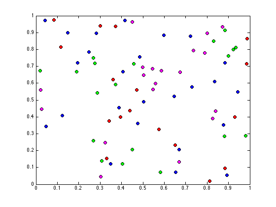
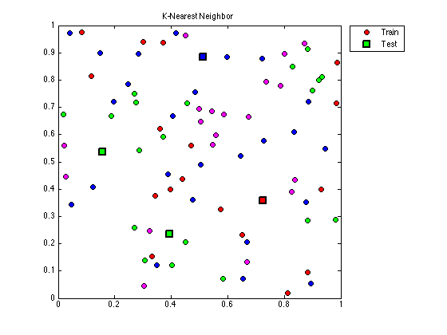
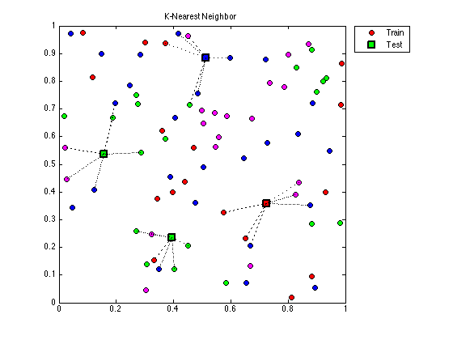

Contents
clc
clear all
Datos
nTrainData = 80;
colorClass = {'r','g','b','m'};
% Entrenamiento
trainData = rand(2,nTrainData);
% Clases
trainClass = randi(4,1,nTrainData); % 50 numeros entre 1 y 4
Variables
K = 6; [~, trainM] = size(trainData); Class = unique(trainClass); nClass = length(Class);
Grafica
Entrenamiento
figure(1); for i=1:trainM A = trainData(:, i); trainPlot = plot(A(1,:), A(2,:),'o',... 'MarkerEdgeColor', 'k',... 'MarkerFaceColor', colorClass{trainClass(i)},... 'MarkerSize', 7); hold on; end
Prueba
[x,y] = getpts(gcf); testData = [x,y]'; [~, testM] = size(testData);
Clasificacion
[K_NN, testClass] = knn(trainData, trainClass, testData, K);
Grafica
Prueba
for i=1:testM A = testData(:, i); testPlot = plot(A(1,:), A(2,:), 's',... 'LineWidth',2,... 'MarkerEdgeColor', 'k',... 'MarkerFaceColor',colorClass{testClass(i)},... 'MarkerSize', 10); hold on; end legend([trainPlot, testPlot],'Train', 'Test',... 'Location','NorthEastOutside'); title('K-Nearest Neighbor'); hold off;
Patch
for i=1:testM % Vertices puntos(:,:,i) = [testData(:,i)'; K_NN(:,:,i)']; verts = puntos(:,:,i); % Distancia for j=2:K+1 dist = [1 j]; % Propiedades de patch distancia.Vertices = verts; distancia.Faces = dist; distancia.FaceColor = 'none'; distancia.LineStyle = ':'; distancia.Edgecolor = 'black'; distancia.LineWidth = 1; patch(distancia); end end